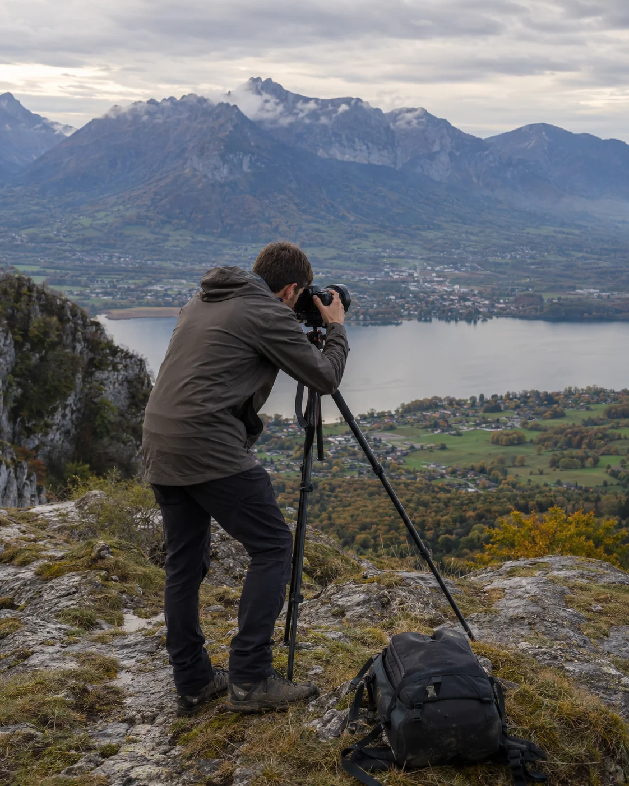

Analyse de votre activité
Nous échangeons sur votre style, vos spécialités, votre clientèle, vos prestations et la manière dont vous présentez vos images.
Photographe
Vos images méritent mieux qu'un simple fil sur les réseaux sociaux. Central Web Agency crée votre site internet sur mesure pour présenter votre univers, construire un portfolio professionnel, détailler vos prestations et transformer vos visiteurs en demandes de séance ou de reportage.

Vos défis au quotidien
Votre travail est avant tout visuel. Pourtant, de belles images ne suffisent pas toujours à expliquer vos offres, rassurer un prospect et l'amener jusqu'à une demande de devis. Votre site doit donner de l'espace à vos photos tout en structurant votre activité commerciale.
Entre Instagram, galeries externes et publications anciennes, vos meilleures images peuvent être difficiles à découvrir. Un site rassemble une sélection cohérente de votre travail.
Les réseaux sont utiles pour communiquer, mais votre site constitue un espace professionnel que vous maîtrisez pour présenter durablement votre activité.
Mariage, portrait, famille, entreprise ou événement : chaque prestation mérite une présentation claire avec son déroulement et ses modalités.
Un formulaire adapté peut recueillir dès le départ la date, le type de séance, le lieu et les informations utiles pour qualifier une demande.
Un site optimisé apporte de bonnes bases pour apparaître sur les recherches liées à votre spécialité et à votre zone géographique.
Votre style, votre approche et votre façon de travailler vous différencient. Le design du site doit servir vos images, pas les étouffer.
La solution
Un site de photographe doit laisser respirer les images, guider le regard et donner envie d'en découvrir davantage. Mais il doit aussi expliquer votre manière de travailler, présenter vos prestations et faciliter le premier contact.
Une vitrine peut parfaitement accueillir votre portfolio et vos offres. Pour des besoins plus avancés, un site dynamique peut intégrer administration, galeries privées, demandes structurées, espace client ou paiement selon le périmètre défini pour votre projet.
Un portfolio organisé par univers permet aux visiteurs de comprendre rapidement votre style et vos spécialités.
Vos prestations, votre méthode et des appels à l'action bien placés accompagnent le prospect jusqu'à sa demande.
Des contenus adaptés à votre spécialité et à votre secteur apportent de bonnes bases pour votre référencement local.
Vous êtes photographe et souhaitez un site à la hauteur de votre travail ? Parlons de votre projet.
Demander mon devis gratuitPour les professionnels de l'image
Chaque photographe possède son style, sa clientèle et sa manière de travailler. Votre site doit refléter cette singularité.
Présentez vos reportages, votre approche, vos formules et accompagnez les futurs mariés jusqu'à la demande de disponibilité.
Valorisez vos séances portrait, lifestyle, mode, book professionnel ou artistique avec des galeries dédiées.
Présentez vos séances famille, grossesse, naissance ou couple dans un univers cohérent avec votre sensibilité.
Portraits professionnels, équipes, locaux, reportages métier et contenus de marque peuvent disposer d'une offre dédiée aux entreprises.
Présentez vos reportages pour événements privés, professionnels, soirées, salons ou cérémonies.
Packshot, e-commerce, gastronomie, architecture ou immobilier : structurez votre portfolio selon vos marchés professionnels.
Ce que votre site peut faire
Le site doit mettre vos images au premier plan sans sacrifier la rapidité, la clarté de vos offres ni la simplicité du parcours client.
Organisez vos meilleures images par spécialité, projet ou univers pour créer une présentation cohérente de votre travail.
Mariage, portrait, famille, corporate ou produit peuvent disposer de galeries distinctes adaptées à chaque clientèle.
Présentez vos séances, reportages, options et tarifs lorsque vous souhaitez les afficher publiquement.
Un formulaire personnalisé peut recueillir type de prestation, date, lieu, coordonnées et détails du projet.
Dans un projet dynamique adapté, des espaces protégés peuvent être étudiés pour permettre à vos clients d'accéder à des contenus réservés.
Un espace client peut être développé selon vos besoins pour centraliser certaines informations ou fonctionnalités.
Selon le projet, un site dynamique peut intégrer un paiement ou un acompte lié à certaines prestations.
Les retours de couples, familles ou entreprises renforcent la confiance des prospects qui découvrent votre travail.
Un site dynamique peut vous permettre de gérer certains contenus et galeries selon le périmètre prévu.
Reliez votre portfolio à Instagram et à vos autres supports pour créer un écosystème cohérent autour de votre travail.
Vos images et vos offres restent agréables à consulter sur smartphone, tablette et ordinateur.
Le site est conçu pour concilier qualité visuelle et chargement maîtrisé grâce à une intégration adaptée des médias.
Vous avez beaucoup de galeries ou souhaitez un espace client ? Nous vous aidons à choisir la bonne architecture.
Être conseillé gratuitementQuelle solution pour vous
Un site vitrine est idéal pour un portfolio, vos prestations et vos demandes de contact. Un site dynamique devient pertinent pour administrer des contenus, créer des galeries privées, intégrer un espace client, du paiement ou d'autres fonctionnalités avancées.
| Critère | Site vitrine | Site dynamique |
|---|---|---|
| Idéal pour | Portfolio & demandes | Galeries & fonctionnalités avancées |
| Portfolio & prestations | ||
| Formulaire de demande | ||
| Galeries publiques | ||
| Galeries privées avancées | ||
| Espace client / paiement | ||
| Base de données & administration | ||
| Tarif de création | À partir de 450€ TTC | À partir de 2 500€ TTC |
| Abonnement obligatoire | Non | Non |
| Maintenance optionnelle | À partir de 39€/mois | À partir de 99€/mois |
| Délai indicatif | 1 à 3 semaines | Selon les fonctionnalités |
Quelle que soit la solution choisie, aucun abonnement n'est obligatoire. Le site vitrine démarre à 450€ TTC. Le site dynamique et administrable démarre à 2 500€ TTC. La maintenance reste entièrement optionnelle : à partir de 39€/mois pour un site vitrine et 99€/mois pour un site dynamique.
Un doute sur la formule à choisir ? Nous analysons vos besoins et vous orientons sans engagement.
Demander conseilNotre processus
De la découverte de votre univers à la mise en ligne, vous validez les choix importants. Simple, clair et sans mauvaise surprise.
Nous échangeons sur votre style, vos spécialités, votre clientèle, vos prestations et la manière dont vous présentez vos images.

Nous concevons une interface qui met vos photographies au premier plan et respecte votre identité artistique.

Nous intégrons votre portfolio, vos prestations, vos contenus et les fonctionnalités prévues dans le projet.

Nous contrôlons l'affichage, la navigation et le comportement des galeries sur les différents écrans avant publication.
Nos tarifs
Portfolio professionnel ou plateforme plus avancée : dans les deux cas, aucun abonnement n'est obligatoire.
Prix TTC — TVA non applicable, art. 293B du CGI
Site vitrine
Un portfolio professionnel pour présenter votre univers et vos prestations. Paiement unique et aucun abonnement obligatoire.
Site dynamique & administrable
Une solution avec base de données et fonctionnalités avancées autour de votre activité. Paiement unique et aucun abonnement obligatoire.
La maintenance est facultative.
Si vous souhaitez nous confier l'hébergement, la maintenance, les mises à jour et l'accompagnement, nos formules débutent à 39€/mois pour un site vitrine et 99€/mois pour un site dynamique. Vous restez libre de choisir cette option ou non.
Notre différence
Votre site ne doit pas ressembler à celui de tous les autres photographes. Nous construisons une présence numérique qui respecte votre univers visuel tout en restant pensée pour vos visiteurs et vos objectifs professionnels.
Nous prenons le temps de comprendre votre univers, vos spécialités et votre manière de travailler.
Votre site est conçu autour de vos images et de votre identité, sans modèle générique imposé.
Structure technique, balises et contenus sont travaillés pour fournir de bonnes bases de référencement.
Votre portfolio reste agréable à parcourir sur smartphone, tablette et ordinateur.
Votre site clé en main vous appartient, sans abonnement de maintenance imposé.
Selon sa conception, votre site peut évoluer avec votre activité, vos galeries et vos nouveaux services.
Après la livraison, nous restons joignables pour vous accompagner selon les modalités prévues.
FAQ
Une question sur votre futur site, nos tarifs ou le déroulement du projet ?
Poser ma questionUn site vitrine clé en main démarre à partir de 450€ TTC. Un site dynamique et administrable avec base de données et fonctionnalités avancées démarre à partir de 2 500€ TTC. Dans les deux cas, aucun abonnement n'est obligatoire.
Un site vitrine est généralement livré entre 1 et 3 semaines. Pour un site dynamique, le délai dépend des fonctionnalités et vous est précisé dans le devis avant le démarrage.
Oui. Votre portfolio peut être organisé en plusieurs galeries ou univers afin de séparer, par exemple, mariage, portrait, famille, corporate ou produit.
Oui, dans le cadre d'un site dynamique adapté. Des espaces protégés ou fonctionnalités privées peuvent être étudiés selon vos besoins précis.
Oui. Le site est conçu en responsive afin que votre portfolio reste agréable à consulter sur smartphone, tablette et ordinateur.
Nous travaillons l'intégration et l'optimisation des médias pour concilier qualité visuelle et performances. Le résultat dépend également du nombre, du poids et du format des fichiers utilisés.
Oui. Vous pouvez afficher vos formules, prestations, options et tarifs, ou choisir de présenter uniquement certaines informations et d'orienter les visiteurs vers une demande de devis.
Oui. Votre site peut être relié à Instagram et à vos autres réseaux sociaux afin que les visiteurs puissent facilement retrouver vos différents univers.
Oui. Votre site clé en main vous appartient, qu'il s'agisse d'un site vitrine ou d'un site dynamique. Aucun abonnement n'est obligatoire : les formules de maintenance restent entièrement optionnelles.
Oui. Central Web Agency est basée à Heyrieux, près de Lyon, et peut accompagner des photographes partout en France grâce à un suivi réalisable à distance.
Vous bénéficiez de 30 jours de retouches offertes sur le périmètre validé. Ensuite, vous pouvez gérer votre site selon les modalités prévues au projet ou choisir une maintenance optionnelle : à partir de 39€ par mois pour un site vitrine et 99€ par mois pour un site dynamique.
La création du site est proposée en paiement unique : à partir de 450€ TTC pour un site vitrine et de 2 500€ TTC pour un site dynamique. Aucun abonnement n'est obligatoire. La maintenance est proposée en option à partir de 39€ par mois pour un site vitrine et 99€ par mois pour un site dynamique.
Prêt à donner un écrin à vos images ?
Un univers visuel fort, un portfolio professionnel et des prestations clairement présentées. Donnez à votre travail photographique un site à sa hauteur. Devis gratuit et sans engagement sous 24h.
Vous préférez écrire ? Utilisez le formulaire de contact, nous vous répondons rapidement.